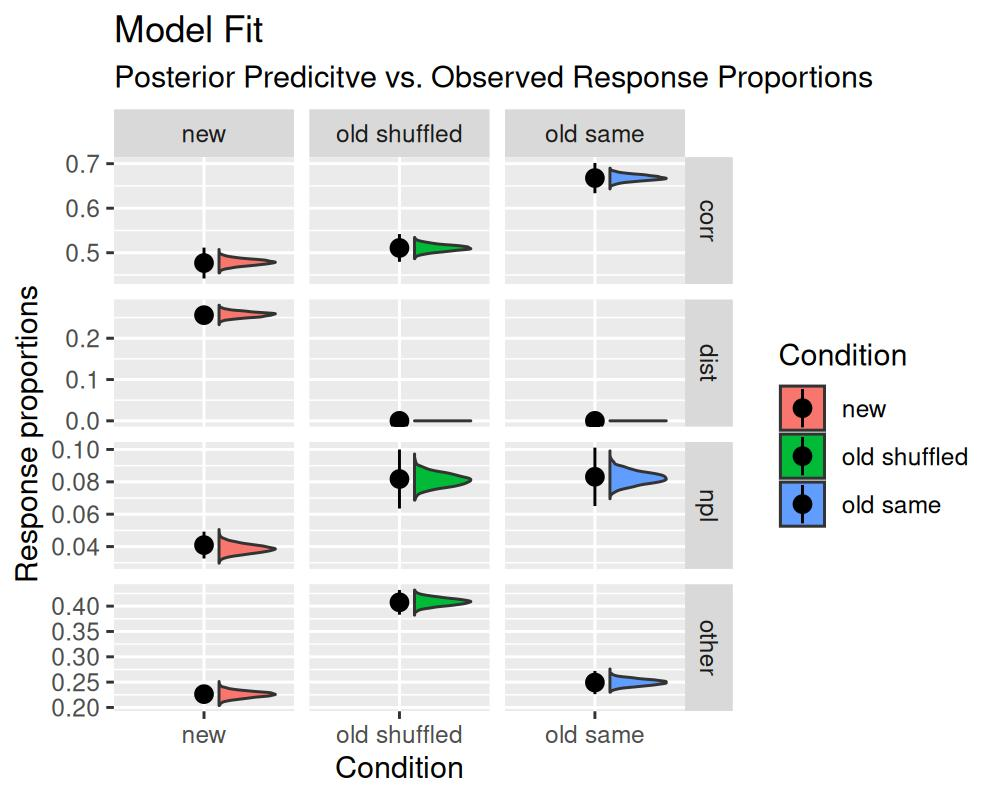

The Multinomial / Memory Measurement Model (M3)
Gidon Frischkorn
Chenyu Li
Isabel Courage
Source:vignettes/articles/bmm_m3.Rmd
bmm_m3.Rmd1 Introduction to the model
The multinomial / memory measurement model (m3) is a computational measurement model that was introduced for working memory tasks with categorical responses (Oberauer and Lewandowsky 2019). Such task typically use verbal and visual materials, for example: letters, words, objects, and digits. The only prerequisite for using the m3 is that the responses can be grouped into separate response categories. For each of these response categories the model predicts the frequency of selecting one item of a category as a function of continuous activation strengths.
Withing the domain of working memory, the m3 most commonly distinguishes two different activation dimensions:
- Memory strength of individual elements or items presented during a single trial, often labelled item memory
- Memory strength of relations, relying on temporary bindings, often labelled binding or source memory
The m3 also allows to include additional hypothetical processes that might increase or diminishing these activation strengths due to experimental manipulations, such as manipulating encoding time or distraction in the domain of memory.
1.1 Basic assumptions of the m3
The m3 builds on two general assumptions:
- Choosing a response (in memory tasks = memory recall) represents a competitive selection from a set of response candidates
- Selection from the candidate set is a function of the relative activation of each candidate representation at test
The set of response candidates can either a) follow naturally from the stimulus material, for example all digits from 1 to 9 or all letters from the alphabet, b) be given in the experimental procedure implementing recall as the selection from n response alternatives (n-AFC), or c) be constructed by the individual performing the task. Generally, we recommend focusing on the first and the second use case, as these provide pretty simple and straightforward implementations of the m3.
To simplify the use of the m3, we do not model the activation of each response candidate seperately, but we group the response candidates into categories that all share the same sources of activation. For example, consider a simple short term memory task (simple span task) in which subjects are asked to remember digits in their serial order and are then cued with a random serial position to retrieve the respective digit. In this task, participants can either recall the correct digit that was associated with the cued position, often labelled the item-in-position. But they could also recall any of the other digits they had to remember, often labelled items from other list positions. Finally, they could also recall a digit that was not part of the memory set at all, usually labelled not-presented items or lures. Thus, we have three categories of responses in this task: correct responses or items-in position (labelled \(correct\)), other list items (labelled \(other\)), and not presented items (labelled \(npl\)).
After we have decided on the relevant response categories, we need to specify which activation sources contribute towards each category. For the above simple short term memory tasks, these would most reasonably be:
\[ \begin{align} correct & = b + a + c\\ other & = b + a\\ npl & = b \end{align} \]
In this case, \(b\) is the baseline activation or background noise, that can be understood as the activation of all digits, because participants know that they have to remember digits in general. The parameter \(a\) is the memory strength for items, or general activation, for all items that need to be remembered in the current trial. And parameter \(c\) is the memory strength for relations, or context activation, that arises from the context cue of retrieving the cued serial position.
1.2 Choice Rules in the m3
The activation for each category is then translated into probabilities of recalling one item or response from each category with a normalization function as a choice rule. In bmm we have implemented two choice rules, that are different implementations of Luce’s choice axiom:
- Simple normalization (
"simple")
This choice rule normalizes the absolute activation over the sum of the activation of all items:
\[ p_i = \frac{n_i \cdot A_i}{\sum^n_{j = 1} n_j \cdot A_j} \]
In this normalization the probability \(p_i\) of recalling an item from the category \(i\) results from the number of candidates in the category \(n_i\) times the activation of the category \(A_i\) as specified in the activation formulas above. This total activation of the category \(i\) then gets divided by the sum of all categories \(n\) and their activation that arises as the product of the number of items in the category \(n_j\) times the activation of that category \(A_j\).
The rationale underlying this choice rule is that it provides a meaningful zero point. That is, if any category has zero activation the probability for choosing this category will be zero.
- Softmax
The softmax choice rule normalizes the exponentiated activation of each category over the sum of all exponentiated activations:
\[ p_i = \frac{n_i \cdot e^{A_i}}{\sum^n_{j = 1} n_j \cdot e^{A_j}} \]
This choice rule can be interpreted as an n-alternative SDT model over the different response candidates with a Gumbel (or double-exponential) noise distribution.
Finally, the model then links the response frequencies \(Y\) for each response category to the probabilities \(p\) using a multinomial distribution with the total number of trials:
\[ Y \sim multinomial(p, trials) \]
2 Parametization of the m3 in bmm
Given its introduction in the domain of working memory, there are currently three versions of the m3 model implemented in bmm:
- the
m3for simple span tasks (version = "ss") - the
m3for complex span tasks (version = "cs") - a fully custom
m3that can be adapted to any kind of task with categorical responses (version = "custom").
2.1 m3 for simple and complex span tasks
The simple and complex span versions of the m3 implement the activation functions outlined in Formula 1 (simple span, see also the activation formulas above) and Formula 3 (complex span) in Oberauer and Lewandowsky (2019). In addition to the three response categories of the simple span task, the complex span model distinguished two additional response categories: distractors in or close to the cued position (\(dist_{context}\)), and distractors from other or far away positions (\(dist_{other}\)). Thus, the m3 for complex span tasks requires that you use distractors that could be potentially recalled.1
The activation equation for the m3 for complex span tasks are as follows2:
\[ \begin{align} corr & = b + a + c \\ other & = b + a \\ dist_{c} & = b + f \cdot a + f \cdot c \\ dist_{o} & = b + f \cdot a \\ npi & = b \end{align} \]
For both the simple and complex span m3 you do not have to specify the activation formulas for the different categories. You only need to provide linear or non-linear predictor formulas for the different parameters of the respective m3 version. Using these models you can investigate how different activation sources vary over experimental manipulations or get theoretically grounded indicators of individual differences of the different activation sources.
2.2 Custom m3 for tasks with categorical responses
The version = "custom" of the m3 allows you to specify custom activation functions for memory tasks beyond simple and complex span tasks. Although the m3 was conceived as a measurement model for working memory. The m3 framework can be generalized towards any decision paradigm involving categorical decision that could be explained by continuous activation for difference categorical responses. Therefore, we have relabeled the model from “memory measurement model” to “multinomial measurement model” to reflect the broader application beyond the domain of working memory.
For example, you could use a custom m3 to dissociate different activation sources and cognitive processes contributing to memory performance in memory updating tasks. In addition, to recalling the correct item, items from other positions, or items not presented at all during the current trial, participants can also recall outdated items that have been updated during the trial in such tasks. The frequency of recalling such items, can inform us of the processes contributing towards replacing the initially encoded item with the new item. One such model is discussed in Oberauer and Lewandowsky (2019).
For the version = "custom" of the m3 you have to provide the activation functions for all response categories. Apart from that you then still provide linear prediction formulas for predicting the different parameters by experimental conditions. For details, please see the section Fitting the m3
2.3 Parameter Scaling the m3
Generally, one of the m3 parameters has to be fixed to set the scaling of the model. In bmm the default is to fix the background noise parameter b. Thus the values of the other parameters should be interpreted relative to the background noise. The value b will be fixed to depends on the choice rule you choose for fitting the model. For the simple choice rule, b will be fixed to 0.1, for the softmax choice rule, b will be fixed to 0.
We chose two fix the background noise b for scaling for two reasons:
- Fixing the background noise is similar to fixing noise parameters in other cognitive measurement models, such as the diffusion constant
s, or the standard deviation of the noise added to the signal or noise distribution in SDT. - In
bmmwe require that all activation formulas contain at least the background noiseb. This ensures that if there is no activation from any other source, the model predicts random guessing.
In principle, you can decide to fix another parameter for scaling. Then you need to specify which parameter should be fixed in the bmmformula and additionally provide a formula to predict the background noise b.
3 Fitting the M3
To fit the m3 in bmm, we need to perform the same three steps as for all models fitted in bmm:
- Load data and format it to match the requirements for the
m3 - Specify the
bmmformula - Create the
bmmodelobject that links the model to the variables required for fitting in the data
For the ss and cs version of the m3 these steps are practically identical to fitting any other bmmodel. The custom version of the m3 requires some additional bmmformula to specify the custom activation formulas for each response category. This will be explained below.
3.1 The data
Let’s begin by loading the bmm package.
For this example, we will be using the data from the first experiment from Oberauer and Lewandowsky (2019). This data set is part of the bmm package as oberauer_lewandowsky_2019_e1
data <- oberauer_lewandowsky_2019_e1
head(data)#> # A tibble: 6 × 10
#> ID cond corr other npl dist n_corr n_other n_dist n_npl
#> <int> <fct> <dbl> <dbl> <dbl> <dbl> <dbl> <dbl> <dbl> <dbl>
#> 1 1 new distractors 78 11 3 8 1 4 5 5
#> 2 1 old reordered 73 23 4 NA 1 4 0 10
#> 3 1 old same 95 4 1 NA 1 4 0 10
#> 4 2 new distractors 49 23 1 27 1 4 5 5
#> 5 2 old reordered 54 44 7 NA 1 4 0 10
#> 6 2 old same 64 23 8 NA 1 4 0 10The data contains the following variables:
-
ID: an integer uniquely identifying each participant in the experiment -
cond: a factor distinguishing three experimental conditions that varied the type of distractors -
corr,other,dist, andnpl: The frequencies of responding with one item of the respective response categories -
n_corr,n_other,n_dist, andn_npl: The number of response candidates in each response categories for each experimental condition
This data set already contains all the information required to fit the M3 model. But if you have a data set that is in long format and contains which response_category the response in each trial belongs to, then you need to aggregate the data and sum the number of responses for each category in each of the experimental conditions that the model should be fitted to.
3.2 Specifying the bmmformula for the m3
After having set up the data, we specify the bmmformula. For the ss and cs versions of the m3 the bmmformula should contain only the linear model formulas for each of the model parameters. These could look like this:
# example formula for version = ss
ss_formula <- bmf(
c ~ 1 + cond + (1 + cond | ID),
a ~ 1 + cond + (1 + cond | ID)
)
# example formula for version = cs
cs_formula <- bmf(
c ~ 1 + cond + (1 + cond | ID),
a ~ 1 + cond + (1 + cond | ID),
f ~ 1 + (1 | ID)
)For the custom version of the m3 the bmmformula additionally needs to contain the activation formulas for each response category. This is done by using the label of each response category and predicting it by the activation function that you want to use for this category. The activation function can be any linear combination of different activation sources or non-linear function of activation sources or model parameters and other variables in the data, as exemplified in the more complex models in Oberauer and Lewandowsky (2019):
cat_label ~ activation_functionIf we wanted to implement the model proposed by Oberauer and Lewandowsky (2019) for this data set, we need to specified four activation formulas for the response categories corr, other, dist, and npl:
act_formulas <- bmf(
corr ~ b + a + c,
other ~ b + a,
dist ~ b + d,
npl ~ b
)How you label the parameters in the activation formula is up to you, except for using underscores in the variable names and that the parameter b is reserved for the baseline activation or background noise that is required to be part of the activation function of each response category. Apart from that, we recommend using short labels to avoid parsing errors with special symbols.
Based on the parameter labels that we used in these activation functions, we can then specify the linear formulas for each parameter:
par_formulas <- bmf(
c ~ 1 + cond + (1 + cond | ID),
a ~ 1 + cond + (1 + cond | ID),
d ~ 1 + (1 | ID)
)Then, we can combine both formulas into one by adding them using the + operator. Alternatively you can include all formulas in one call to bmmformula:
full_formula <- act_formulas + par_formulas
# pass all formulas in one call
full_formula <- bmf(
corr ~ b + a + c,
other ~ b + a,
dist ~ b + d,
npl ~ b,
c ~ 1 + cond + (1 + cond || ID),
a ~ 1 + cond + (1 + cond || ID),
d ~ 1 + (1 || ID)
)
3.3 Setting up the bmmodel object for the m3
The last thing we need to do before fitting the m3 to the data is set up the bmmodel object. For this we need to call the m3 function and provide the relevant information for the model. This entails:
- the name of the response categories
- the number of response options in each category or the variable names that contain the number of response options in the data
- the choice rule, if not explicitly called
bmmwill use thesoftmaxas default - the
m3version, if not explicitly selectedbmmwill use thecustomversion as default
Thus, a basic set up of an m3 object looks like this:
my_model <- m3(resp_cats = c("corr","other","dist","npl"),
num_options = c("n_corr","n_other","n_dist","n_npl"),
choice_rule = "simple",
version = "custom")For the custom version, you additionally need to provide the links that should be used for each of the model parameters.The links ensure that model parameters stay in the correct value range. In particular for the simple choice rule it is essential, that all activation are positive. Thus, we recommend using log link functions for all parameters that represent activation sources, such as general or context activation, especially when using the simple choice rule.
Based on the provided links for the model parameters, bmm will set default_priors that aim at a reasonable parameter range. We recommend that you check the priors set for the custom version of the m3 andconsider what parameter ranges are reasonable for the different model parameters and provide default_priors for all of them. For detailed information on priors in bmm please see the vignette("extract_info"). In short, you can provide priors for intercepts as main and for effects as effects.
Setting up a m3 object including these info looks like this:
my_links <- list(
c = "log", a = "log", d = "log"
)
my_model <- m3(resp_cats = c("corr","other","dist","npl"),
num_options = c("n_corr","n_other","n_dist","n_npl"),
choice_rule = "simple",
version = "custom",
links = my_links)
# print default priors determined based on link functions
default_prior(full_formula, data, my_model)
#> Warning: Default priors for each parameter will be specified internally based on the provided link function.
#> Please check if the used priors are reasonable for your application
#> prior class coef group resp dpar nlpar lb ub
#> normal(0, 0.5) b condoldreordered a <NA> <NA>
#> normal(0, 0.5) b condoldsame a <NA> <NA>
#> student_t(3, 0, 2.5) sd a 0
#> student_t(3, 0, 2.5) sd ID a 0
#> student_t(3, 0, 2.5) sd condoldreordered ID a 0
#> student_t(3, 0, 2.5) sd condoldsame ID a 0
#> student_t(3, 0, 2.5) sd Intercept ID a 0
#> (flat) b b
#> normal(0, 0.5) b condoldreordered c <NA> <NA>
#> normal(0, 0.5) b condoldsame c <NA> <NA>
#> student_t(3, 0, 2.5) sd c 0
#> student_t(3, 0, 2.5) sd ID c 0
#> student_t(3, 0, 2.5) sd condoldreordered ID c 0
#> student_t(3, 0, 2.5) sd condoldsame ID c 0
#> student_t(3, 0, 2.5) sd Intercept ID c 0
#> (flat) b d
#> student_t(3, 0, 2.5) sd d 0
#> student_t(3, 0, 2.5) sd ID d 0
#> student_t(3, 0, 2.5) sd Intercept ID d 0
#> normal(0, 0.5) b a <NA> <NA>
#> normal(1, 1) b Intercept a <NA> <NA>
#> normal(0, 0.5) b c <NA> <NA>
#> normal(1, 1) b Intercept c <NA> <NA>
#> normal(1, 1) b Intercept d <NA> <NA>
#> constant(0.1) b Intercept b <NA> <NA>
#> source
#> (vectorized)
#> (vectorized)
#> default
#> (vectorized)
#> (vectorized)
#> (vectorized)
#> (vectorized)
#> default
#> (vectorized)
#> (vectorized)
#> default
#> (vectorized)
#> (vectorized)
#> (vectorized)
#> (vectorized)
#> default
#> default
#> (vectorized)
#> (vectorized)
#> user
#> user
#> user
#> user
#> user
#> user
3.4 Running bmm to estimate parameters
After having set up the data, the bmmformula, and the bmmodel, we can pass all information to bmm to fit the model:
m3_fit <- bmm(
formula = full_formula,
data = data,
model = my_model,
sample_prior = "yes",
cores = 4,
warmup = 1000, iter = 2000,
backend = 'cmdstanr',
file = "assets/bmmfit_m3_vignette",
refresh = 0
)Running this model takes about 20 to 40 seconds (depending on the speed of your computer). Using the bmmfit object we can have a quick look at the summary of the fitted model:
summary(m3_fit) Model: m3(resp_cats = c("corr", "other", "dist", "npl"),
num_options = c("n_corr", "n_other", "n_dist", "n_npl"),
choice_rule = "simple",
version = "custom",
links = my_links)
Links: c = log; a = log; d = log
Formula: b = 0.1
a ~ 1 + cond + (1 + cond || ID)
c ~ 1 + cond + (1 + cond || ID)
d ~ 1 + (1 || ID)
corr ~ b + a + c
other ~ b + a
dist ~ b + d
npl ~ b
Data: (Number of observations: 120)
Draws: 4 chains, each with iter = 2000; warmup = 1000; thin = 1;
total post-warmup draws = 4000
Multilevel Hyperparameters:
~ID (Number of levels: 40)
Estimate Est.Error l-95% CI u-95% CI Rhat Bulk_ESS
sd(a_Intercept) 0.67 0.11 0.48 0.91 1.00 1744
sd(a_condoldreordered) 0.55 0.12 0.33 0.80 1.00 1662
sd(a_condoldsame) 0.27 0.16 0.02 0.59 1.00 864
sd(c_Intercept) 1.62 0.22 1.25 2.10 1.00 1299
sd(c_condoldreordered) 0.23 0.13 0.02 0.49 1.00 795
sd(c_condoldsame) 0.55 0.12 0.34 0.80 1.00 1586
sd(d_Intercept) 0.69 0.12 0.48 0.97 1.00 1623
Tail_ESS
sd(a_Intercept) 2269
sd(a_condoldreordered) 2655
sd(a_condoldsame) 1925
sd(c_Intercept) 2410
sd(c_condoldreordered) 1452
sd(c_condoldsame) 2121
sd(d_Intercept) 2530
Regression Coefficients:
Estimate Est.Error l-95% CI u-95% CI Rhat Bulk_ESS Tail_ESS
a_Intercept -0.30 0.15 -0.60 -0.00 1.00 2112 2304
a_condoldreordered 0.68 0.15 0.37 0.97 1.00 2948 3032
a_condoldsame 0.10 0.14 -0.17 0.36 1.00 3607 3301
c_Intercept 1.60 0.28 1.05 2.14 1.01 466 989
c_condoldreordered 0.03 0.12 -0.22 0.26 1.00 2768 3094
c_condoldsame 0.54 0.14 0.27 0.81 1.00 2887 3132
d_Intercept -0.45 0.15 -0.75 -0.15 1.00 2203 2615
Constant Parameters:
Value
b_Intercept 0.10
Draws were sampled using sample(hmc). For each parameter, Bulk_ESS
and Tail_ESS are effective sample size measures, and Rhat is the potential
scale reduction factor on split chains (at convergence, Rhat = 1).
First, we can have a look at the estimated regression coefficients. The first thing we should check is if the sampling converged, this is indicated by all Rhat values being close to one. If you want to do more inspection of the sampling, you can check out the functionality implemented in brmsto do this.
The parameter estimates for c, a, and d are estimated using a log link function, so we have to transform these back to the native scale using the exp function:
fixedFX <- brms::fixef(m3_fit)
# print posterior means for the c parameter
exp(fixedFX[startsWith(rownames(fixedFX),"c_"),])
#> Estimate Est.Error Q2.5 Q97.5
#> c_Intercept 4.930903 1.320092 2.8541063 8.515983
#> c_condoldreordered 1.025825 1.131547 0.8046311 1.300896
#> c_condoldsame 1.712454 1.150015 1.3079862 2.251764
# print posterior means for the a parameter
exp(fixedFX[startsWith(rownames(fixedFX),"a_"),])
#> Estimate Est.Error Q2.5 Q97.5
#> a_Intercept 0.7431726 1.161537 0.5494346 0.9965668
#> a_condoldreordered 1.9699622 1.162509 1.4450414 2.6462022
#> a_condoldsame 1.1053008 1.146248 0.8457697 1.4306108
# print posterior means for the d parameter
exp(fixedFX[startsWith(rownames(fixedFX),"d_"),])
#> Estimate Est.Error Q2.5 Q97.5
#> 0.6353230 1.1666323 0.4732908 0.8628526These estimates differ from the estimates reported by Oberauer and Lewandowsky (2019), because we used a log link function, whereas in the original publication an identity link was used. This was done with adding truncation arguments to the priors, to ensure that all activations are positive. In principle, this is possible in bmm, too. However, such an estimation is less numerically stable and efficient. Therefore, we recommend using log links for activation parameters that should be positive.
3.4.1 Testing Hypothesis
When comparing the differences between the different conditions, the results from bmm converge with those in Oberauer and Lewandowsky (2019). The goal of this first experiment was to show a selective influence of different conditions on the c and a parameter. This replicated using the bmm implementation of the proposed m3. To evaluate the posterior differences between the conditions, we can use the hypothesis function from brms:
post_diff <- c(
c_newVoldR = "c_condoldreordered = 0",
c_newVoldS = "c_condoldsame = 0",
c_oldRVolds = "c_condoldreordered = c_condoldsame",
a_newVoldR = "a_condoldreordered = 0",
a_newVoldS = "a_condoldsame = 0",
a_oldRVolds = "a_condoldreordered = a_condoldsame"
)
hyp <- brms::hypothesis(m3_fit, post_diff)
hyp
#> Hypothesis Tests for class b:
#> Hypothesis Estimate Est.Error CI.Lower CI.Upper Evid.Ratio Post.Prob Star
#> 1 c_newVoldR 0.03 0.12 -0.22 0.26 3.90 0.80
#> 2 c_newVoldS 0.54 0.14 0.27 0.81 0.01 0.01 *
#> 3 c_oldRVolds -0.51 0.14 -0.79 -0.23 0.03 0.02 *
#> 4 a_newVoldR 0.68 0.15 0.37 0.97 0.00 0.00 *
#> 5 a_newVoldS 0.10 0.14 -0.17 0.36 2.81 0.74
#> 6 a_oldRVolds 0.58 0.15 0.28 0.87 0.00 0.00 *
#> ---
#> 'CI': 90%-CI for one-sided and 95%-CI for two-sided hypotheses.
#> '*': For one-sided hypotheses, the posterior probability exceeds 95%;
#> for two-sided hypotheses, the value tested against lies outside the 95%-CI.
#> Posterior probabilities of point hypotheses assume equal prior probabilities.These hypothesis will compute the difference between the specified parameters. You can see that the c parameter in the condition oldsame differs from both the new and oldreorderd condition. In contrast the a parameter in the condition oldreordered differs from both the new and the oldsame condition. For these differences the 95% CI does not include zero as indicated by the * at the end of the line.
As we included a statement to also sample the priors using the sample_prior = TRUE option from brms when running the bmm, the Evid.Ratio and Post.Prob column given us the Bayes Factor in favor of the specified hypothesis and the posterior probability for the hypothesis being true.
3.4.2 Assessing model fit
For most models implemented in bmm you can easily assess model fit by visually inspecting posterior predictive plots provided by the pp_check function. Unfortunately this function is not yet implemented for multinomial distributional models, such as the m3 model.
Nevertheless, there is a pretty simple way to assess model fit for the m3 model by obtaining posterior predictions using the tidybayes package. Using the posterior predictive draws for the frequency of selecting each response category, we can compare the observed frequencies to the predicted frequencies. If the model fits the data well, the observed frequencies should be within the 95% credible interval of the predicted frequencies.
library(tidybayes)
library(dplyr)
library(ggplot2)
pp_m3 <- m3_fit %>%
# obtain expected predicted draws
tidybayes::epred_draws(
newdata = .$data
) %>% ungroup() %>%
# select only relevant variables
select(ID, cond, nTrials, .draw, .category, .epred) %>%
# calculate the mean predicted values in each condition for each response category
# and each draw
summarise(.epred = mean(.epred/nTrials),
.by = c(cond, .category, .draw))
# reshape data to match the format of the posterior predictives
data$n_trials <- rowSums(data[,c("corr","other","dist","npl")], na.rm = T)
data_pp <- data %>%
select(ID, n_trials, cond, corr, other, dist, npl) %>%
tidyr::pivot_longer(cols = c(corr, other, dist, npl), names_to = ".category", values_to = ".value") %>%
mutate(.value = .value/n_trials)
# some responses were not possible in some conditions, so we set them to zero
data_pp[is.na(data_pp)] <- 0
# relabel condition factor for better readability
levels(pp_m3$cond) <- c("new", "old shuffled", "old same")
levels(data_pp$cond) <- c("new", "old shuffled", "old same")
# plot the posterior predictive draws against the observed data
ggplot(data = pp_m3,
aes(y = .epred, x = cond, fill = cond)) +
facet_grid(.category ~ cond, scales = "free") +
gghalves::geom_half_violin(
side = "r", nudge = 0.1, trim = TRUE
) +
stat_summary(data = data_pp, aes (y = .value),
fun.data = mean_se) +
labs(y = "Response proportions",
x = "Condition",
fill = "Condition",
title = "Model Fit",
subtitle = "Posterior Predicitve vs. Observed Response Proportions")
The generated plot illustrates that the distribution of posterior predictive response distributions is in line with the observed response distributions. This indicates that the model fits the data well. For this particular model, this is unsurprising as it is saturated with respect to the number of parameters and the number of observations.